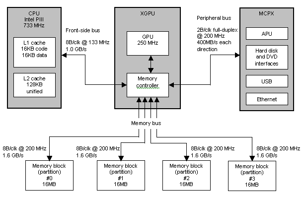
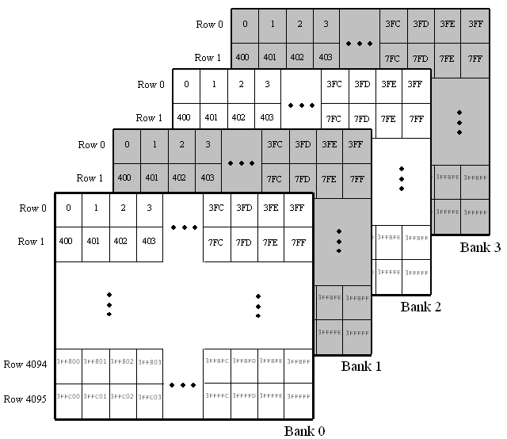
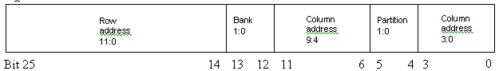
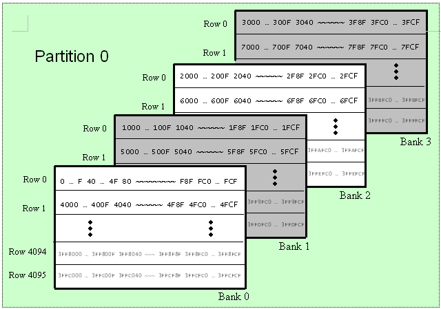
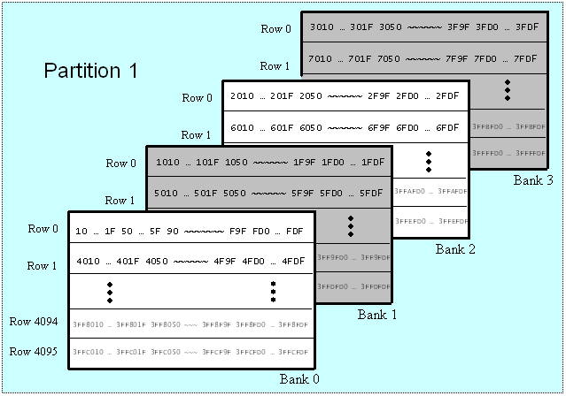
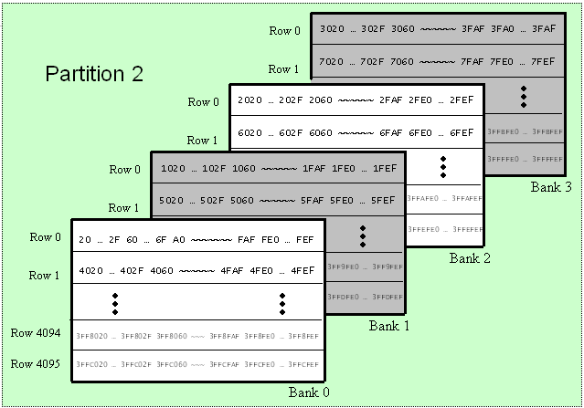
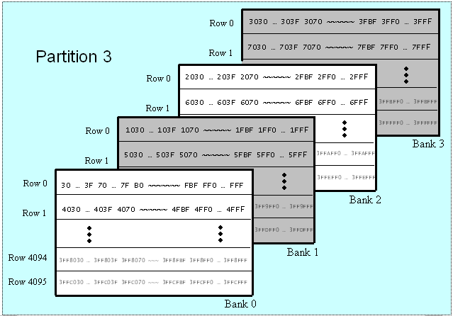
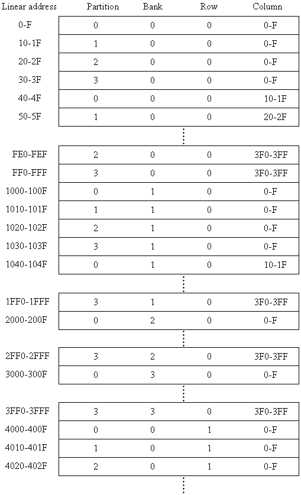

By Mike Abrash
A few weeks ago, my daughter came home from school with a swollen, purple finger. It had gotten whacked in a field-hockey game, and my wife wondered if we should go to a doctor. Now, I'd injured my fingers plenty of times when I was a kid, and no doctor ever got excited about it; even when I broke two fingers, all the doctor did was tape them together. So I said no, just ice it and let it heal.
A couple of days later the finger was really swollen and purple, so we did finally take her to a doctor. The diagnosis: a break clean through the bone, at an angle. That's a type of fracture that tends to slip, and if it did slip, surgery would be needed. They immediately put the finger in a big splint, and told us to come back in a week and see if it needed to be rebroken and pinned.
Oops.
Fortunately, it didn't slip and surgery wasn't needed. Still, the whole thing just goes to show that sometimes, a good dose of worrying is appropriate.
In the context of the Xbox® game system, it seems like memory-architecture-aware programming would be one place where a lot of worrying is in order. After all, consoles have weird, asymmetric memory designs, and the best console programmers get way down into the guts of the box and lay out their data so that it gets maximum memory bandwidth, taking advantage of the banks and pages and partitions and burst modes and addressing quirks for the absolute best performance. Sure, it's painful, but if you do all that hard work, it'll pay off in the end in the form of a faster program. Right?
Well, not exactly. Below, I'll give you all the info about Xbox memory architecture you could ever want-but the bottom line might come as a surprise. Here's the executive summary: it helps to observe a few simple rules, but for the most part, don't worry about it.
Before we dive into details, here are a couple of important takeaways about Xbox memory.
Next, we'll explore these points in detail, along with everything else you ever wanted to know about Xbox memory but didn't know who to ask. First, we'll look at an overview of Xbox memory, buses, and the memory controller; next, we'll look at how Xbox linear memory addressing maps to the RAM chips and the performance implications thereof; after that we'll look at memory-related aspects of the CPU; then we'll look at tiling and texture swizzling, which allow more efficient access to memory in certain cases; and finally we'll look at some programming practices that can be helpful in improving memory performance.
Xbox's memory architecture consists of an Intel PIII/733, an NVIDIA XGPU chip that contains both the graphics processing unit (GPU) and the memory controller, an NVIDIA MCPX chip that contains the audio processing unit (APU) and peripheral interfaces, and four blocks of 16-MB DDR SDRAM (Double Data Rate Synchronous Dynamic Random Access Memory), with all bus masters sharing the same memory (UMA), as shown in the following figure.

Note Xbox will probably initially ship with two 2M×32 RAM chips per 16-MB memory block, for a total of 8 RAM chips, but these will be configured so that their performance will be identical to a configuration of four 4M×32 RAM chips; in particular, the number of banks in the eight-chip configuration will be limited to match the four-chip configuration. It is likely although not certain that later revisions of the Xbox hardware will in fact use four chips-one 4M×32 chip per bank-to reduce cost.
The RAM chips run at a 200-MHz memory clock (MCLK). Each 16-MB memory block has an independent bus. The data bus to each memory block is 32 bits (4 bytes) wide, but because DDR chips transfer data on both rising and falling clock edges, each block is capable of transferring 8 B (bytes) per MCLK, for a maximum transfer rate of 1.6 GB/s per block. The memory controller is capable of saturating the memory buses to all four memory blocks in parallel (that is, the memory controller can run all four chip buses flat out simultaneously, and in fact can saturate the CPU, GPU, and peripheral buses at the same time, as well), so the overall maximum memory transfer rate is 6.4 GB/s. This transfer rate assumes that all memory accesses occur with zero page-opening latency (as discussed below), which will not be the case in actual usage, so 6.4 GB/s should be thought of as a theoretical maximum that can be approached but not achieved except in short bursts.
Obviously, the performance of Xbox depends heavily on how busy the memory subsystem can be kept. Both the memory controller and the memory-addressing scheme are designed to maximize effective memory bandwidth, in several ways:
Together, these factors automatically make available to games a large percentage of that 6.4 GB/s of theoretical bandwidth. Simulations predict that for real games running on Xbox, a minimum of 70 percent of the theoretical data rate will be available-in other words, games will have at least 4.5 GB/s of memory bandwidth at their disposal without any special memory-aware programming. This is why Xbox performance programming requires relatively little awareness of memory architecture.
The front-side bus (FSB) to the CPU runs at 133 MHz, slower than the 200-MHz MCLK. At 64 bits it's twice as wide as an individual memory block bus, but, unlike DDR, it's only clocked off one edge, so the total data transferred per clock is 8 bytes, the same as a single memory block bus. Because the memory block buses run at a higher clock speed, each one separately has higher bandwidth than the FSB. The disparity between memory bandwidth and FSB bandwidth reflects two factors: (1) the GPU-which processes huge amounts of vertex, texture, and pixel data-is the largest consumer of memory bandwidth, and (2) the CPU has a 128-KB L2 cache, so many of its memory transactions don't have to go over the FSB. The GPU also has caching in several forms, as described in the papers about the T&L part of the pipeline and the texture cache, but the GPU tends to read and write so much data that it needs considerably more bandwidth than the CPU.
The peripheral bus to the MCPX chip supports 400 MB/s full-duplex-that is, 400 MB/s in each direction simultaneously. This bus is used for the same sorts of things that PCI is used for in a PC-transferring audio, Ethernet, hard disk, and DVD data to and from memory-and USB data as well. Peripheral bus transfers are not an important part of the bandwidth picture; of the peripheral bus masters, only the APU is capable of consuming as much as 1 percent of total memory bandwidth, maxing out with all 256 voices at about 120 MB/s, still less than 2 percent of total memory bandwidth. The peripheral bus is able to specify a priority for each memory request to the memory controller, and is also able to fulfill requests in either direction out of order, whenever data becomes available, which helps the memory controller balance latency and bandwidth for the overall system.
The data bus between the memory controller and the GPU is internal to the XGPU chip. Both this bus and the GPU are able to handle the peak 6.4 GB/s that can be produced by the four memory blocks and transferred through the memory controller, so neither the bus nor the GPU imposes any bandwidth constraints on GPU performance.
Finally, the memory controller arbitrates and controls the execution of all memory requests on behalf of all bus masters. The memory controller can reschedule memory accesses for better performance; Xbox's UMA memory and many bus masters help make this rescheduling highly effective, by providing a variety of concurrent requests of different sorts to be interleaved together. The memory controller is aware of the different needs of the various bus masters and factors them into its arbitration and scheduling. For example, the CPU generally uses a relatively small amount of memory bandwidth but is latency critical, since it is often in a stall condition until it gets a response from memory. The GPU requires a huge amount of memory bandwidth but has relatively high tolerance for latency, due to the depth of the pipeline, which hides memory latency. The APU has very low bandwidth requirements and is generally latency-tolerant but has hard deadlines by which the data must arrive. Consequently, the memory controller prioritizes requests as follows: CPU requests, high-priority peripheral-bus requests, GPU requests, and other peripheral-bus requests.
To those who have never encountered the low-level details of memory addressing before, it no doubt seems simple. You have a bunch of addresses, going from lowest to highest. They probably just map directly to how data is stored in the RAM chips. What could be complicated about that?
That's the way things appear to be from the perspective of the CPU, but hardware people and console veterans know that the mapping of CPU addresses to actual RAM storage locations can vary a great deal, depending on how the CPU's memory address lines are connected to the RAM chips. Moreover, there's no requirement that other bus masters, such as the GPU, have their address lines hooked up in the same way, although fortunately on Xbox all bus masters do in fact share the same memory addressing. It all depends on how the hardware designers choose to hook up memory-a choice that in turn reflects anticipated bus-master memory access pattern and the internal architecture and performance characteristics of the RAM chips.
Consequently, any discussion of Xbox's memory addressing is going to be pretty much unintelligible without the proper background, so first let's establish some terminology and review various aspects of memory addressing. This material will also come in handy for understanding memory-related performance issues later on.
In Xbox memory-addressing lingo, a partition is a memory block (consisting of either one 4M×32 or two 2M×32 RAM chips). The two words are interchangeable for the purposes of this discussion. There are four memory blocks, hence four partitions. Each partition stores 16 MB.
Each partition's bus is 4 B wide. However, partitions transfer data on both the leading and trailing edges of the memory clock; moreover, the memory controller is designed so that the basic memory transaction takes a minimum of 2 MCLKs. This means that each memory request spans at least 2 MCLKs and can transfer at least 16 B. One important implication is that from a bandwidth perspective, every memory access costs at least as much as if 16 B had been read or written.
The minimum transaction size for the CPU is even larger: 32 B, spread over two partitions and 2 MCLKs, reflecting the 32-B size of CPU cache lines. If you're thinking that the CPU is able to read and write units smaller than 32 B-individual bytes, for instance-that's true from a program's perspective, but by the time the transaction reaches the RAM chips, it's a 32-B operation. This conversion of smaller transactions to 32 B happens in any of several ways. For CPU-cached memory, CPU memory transactions go through the CPU L1 and L2 caches, which always read and write blocks of 32 B at a time when they have to access memory (on a cache miss or eviction). For reads from non-cached memory, any unneeded bytes out of the 32 bytes read are simply thrown away. For writes to non-cached memory, the memory controller tells the RAM chips to ignore any unneeded bytes out of the 32 bytes written. The bottom line is that, regardless of type, every CPU memory transaction completely occupies two partitions for 2 MCLKs, so from a bandwidth perspective it costs as much as if 32 B had been read or written. (This doesn't, of course, mean that it costs 32 B of bandwidth every time a program does a read or write. For cached memory, the cache avoids many memory transactions and gathers others into 32-B bursts, and for write-combined memory, multiple writes can be gathered into 32-B bursts, as discussed below.)
CPU accesses are not only 32 B in size but are also 32-B aligned. (That is, each CPU access reads or writes a 32-B block of memory starting at an address that's a multiple of 32 B.) This means that 8 B read by the CPU from addresses 1C-23 will actually require that the 64 B from 0-3F be read.
A quick note on non-cached memory: the CPU supports two sorts of non-cached memory: uncached and write-combining. Write-combining memory can gather up multiple writes to the same aligned 32-B chunk, then write them all to memory in a single operation, thereby saving a great many memory writes and running a lot faster. The only reason to ever use uncached memory rather than write-combining is when it's critical that each CPU write be sent to memory as a separate transaction and in exactly the order that the writes occurred. As of this writing, no such situation exists on Xbox (an uncached address space is used for sending commands to memory-mapped control registers, but these don't involve any physical memory), so you should use write-combining for all memory you never read from (such as push-buffers, vertex buffers, and textures-any memory the GPU accesses must be non-cached). Details of cached and write-combining memory on Xbox will be discussed further in another paper; additional information about write-combining memory can be found at http://developer.intel.com/design/PentiumII/applnots/244422.htm.
A partition can be thought of as a 3D matrix of rows, columns, and banks. Far from being a convenient fiction, this reflects the actual operation of RAM chips, which are in fact internally addressed via row, column, and bank addresses. Each row consists of a block of 1-K column-addressable bytes. Each of Xbox's partitions contains 16-K rows, with the rows organized into four banks of 4-K rows each, as shown in the following figure:

The number in each cell is the address of that byte within its bank. Row #0 in bank 0 covers bytes 0-1023 of that bank; row #1 covers 1024-2047; and so on. Likewise, row #0 in bank 2 covers bytes 0-1023 of bank 2. (Note that these do not correspond to CPU addresses because of the bank and partition bits, which we'll cover shortly.) So at the partition level, a storage location isn't pointed to by a single linear address, but rather by three addresses: bank, row, and column. (Remember, for a given partition the storage locations may be contained in a single 4M×32 RAM chip or spread over two 2M×32 chips, but the two-chip configuration is logically equivalent to and is set up to perform like a single 4M×32 chip.)
The details of row, column, and bank addressing are handled transparently to the CPU, but are nonetheless important to understand, because memory access times vary considerably depending on access patterns with respect to rows. When a row address is already opened-that is, when the row has recently been accessed and the partition has everything set up and ready to go to access that row, awaiting only a column address-access proceeds at full speed. However, accessing a new row-setting up to access the row from scratch-is much slower.
The full set of 1-K storage locations addressed by a single row address is typically called a page, rather than a row. On Xbox, opening a page-that is, switching to a different row address that is not currently open-is expensive, consuming as many as 12 MCLKs. However, any access to a page that is already open will proceed with no delay, at the rate of 8 B/MCLK. Thus, if the memory controller accesses storage location 0, then immediately after accesses storage location 16, the second access will be a page hit and will proceed at full speed. If it then accesses storage location 0xFFFFFF, a new page will have to be opened, which will require a number of MCLKs. Actually, the cost of opening a page can often be partly or entirely hidden, as discussed below, but nonetheless, page hits are generally faster than page misses, and certainly never slower.
So the takeaways here are that a page is an aligned 1KB block of storage locations within a partition, and that page hits are good, page misses are bad.
As mentioned above, each partition has four banks, each consisting of one-quarter of the pages, yielding 4 K pages per bank in the case of Xbox. Banks matter because at any given time, exactly one page can be open in each bank, independent of the other banks; thus, up to four pages-one from each bank-can be open at a time in each partition. If you access a page in bank 0 and then a page in bank 1, immediately afterward both pages would be open, because they are in different banks, and each bank can keep one page open. However, if you were to access a page in bank 0 followed by another page in bank 0, immediately afterward only one of the pages would still be open, because they are in the same bank, and one bank can keep only one page open.
How banks map to CPU addresses depends on how the address lines are hooked up to the RAM chips. We'll look at how that works for Xbox shortly.
While page misses can take up to 12 MCLKs, their costs can often be partly or completely hidden by the memory controller. This is because a row address can be sent to a partition while data is being fetched from other banks in the same partition, and the operations can proceed in parallel. Obviously, this won't work if all the accesses at a particular time are to the same bank, but given the mix of memory clients in the system, generally there will be mix of banks being accessed and considerable opportunity for overlapping of page misses.
What this means is that while page hits are never worse and generally better than page misses, page misses are rarely as expensive as they might appear. This, in turn, implies that it rarely makes a significant difference if programmers arrange their memory use for optimum paging. Thus, programmers should as a rule concentrate on higher-level issues and let the memory controller take care of minimizing paging costs. This is especially true because memory addressing is set up so that accesses with good locality will tend to produce a lot of page hits, as we'll see next, so you will get good results simply by following the good practice of packing data so that when any particular area of memory is touched, all or most of the bytes get used. (We'll return to the topic of memory-performance friendly data structuring later.)
Notwithstanding, let's take a look at exactly how memory is laid out in Xbox, so you can decide for yourself if you want to try to improve performance by contorting your data structures.
Now that we understand partitions and banks and rows and columns, let's see how they work in Xbox. Linear Xbox memory addressing (as opposed to tiled addressing, as discussed below), for all bus masters, is laid out thus:

This table shows how the 26 bits of the 64-MB linear memory address that any bus master can specify to the memory controller actually gets routed in order to specify the location of the data to be retrieved. So, for example, bits 3:0 of the linear memory address specify the four least significant bits of the byte column address within whatever partition is being accessed.
A good place to start with this figure is to look at how the linear address selects the memory block to be accessed. This is done via the partition field, which specifies which one of the four partitions is to be accessed. The location of this value-bits 5:4 of the linear address-means that as you go sequentially through the linear address space, a new partition (memory block) is addressed every 16 bytes, and in the course of 64 bytes all four partitions are touched. This 16-B granularity ensures that all but the smallest memory blocks will stretch across multiple partitions, which in turn ensures that the system load for each task will usually be balanced across the four partitions. This avoids large-scale contention between bus masters and provides the memory controller with plenty of opportunity to schedule and interleave accesses to hide the costs of page misses.
An important implication of 16-B partitioning is that peak speed for sequential data access is not limited to the 1.6-GB/s throughput of one partition. Accesses move from partition to partition every 16 B, allowing the memory controller to keep multiple partitions busy servicing the requests. In fact, larger memory accesses will use multiple partitions simultaneously; for example, each fetch of a 32-byte-aligned 32-byte vertex will read from two partitions at once. Similarly, every CPU cache miss accesses two partitions, since the CPU always reads and writes 32-B blocks.
Bits 11:6 of the linear memory address map to the upper part of the column address. In conjunction with the use of bits 5:4 to select the partition and bits 3:0 to specify the low part of the column address, this means that as you walk linearly through any aligned 4-KB block of the address space, you cover 1 K sequential bytes-a single page-of each partition's address space, cycling through the partitions with a 16-B granularity.
An important implication of this is that the overall system page size is 4 KB. In other words, as you access memory linearly starting at a 4 K-aligned boundary, you can go 4 KB while accessing the same four pages, one in each partition. (At the 4-K boundary, you will in short order-every 16 B-open four new pages, one in each partition.)
So now we understand linear addressing of 4-KB chunks of memory-every aligned 4-KB block covers exactly one page in each partition, cycling through the partitions every 16 B. Let's see how those pages fit together in the overall address space.
The next two address bits, 13:12, are the bank bits, which select which one of the four banks is to be accessed. This location of the bank bits means that a new bank in each of the four partitions is addressed every 4 K of the linear address space, and all four banks in each partition are cycled through in the course of 16-K addresses. Thus you could read the 16 addresses 0, 0x10, 0x20, 0x30, 0x1000, 0x1010, 0x1020, 0x1030, 0x2000, 0x2010, 0x2020, 0x2030, 0x3000, 0x3010, 0x3020, and 0x3030 to open all the pages in a 16-KB range, and could then go back and read any or all of the addresses in the range 0-0x3FFF without a single additional page miss (assuming no other bus masters were active at the time).
The rest of the linear memory address simply specifies which row within the partition and bank to access, so the 16-KB pattern described above repeats 4 K times, for a total of 64 MB of memory. The following figure summarizes how linear memory addresses map to partitions, banks, rows (pages), and columns.




In the above figure, the numbers shown are the linear addresses at which bus masters such as the CPU see the storage locations that are located at various bank, row, and column addresses in the four partitions. Ellipses ("...") show contiguous ranges; tildes ("~~~") show that the row's pattern is repeated many times.
Another way to look at this is to walk through bus-master-visible linear addresses and see what partitions, banks, rows, and columns we find there:

It's not necessary that you understand the mapping of linear addresses to RAM chip internals in detail. The important point is that memory addresses cycle between partitions every 16 B and between banks every 4 KB, so bandwidth and page-miss loads automatically get distributed across multiple memory blocks and multiple banks-maximizing available bandwidth, providing good opportunity for hiding page misses, and keeping performance consistent-for all but pathological access patterns.